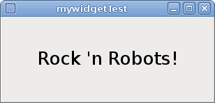
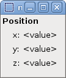
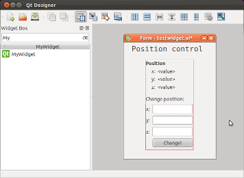
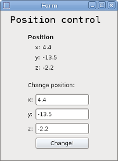
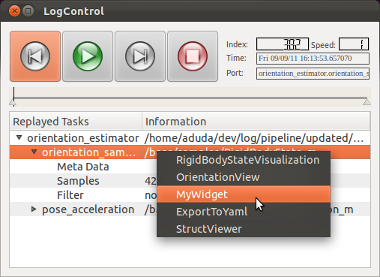

In this tutorial you will learn how to create a C++ vizkit widget for displaying 2D data like images, numbers and text.
For more general information about graphical user interface programming in Rock, see here.
All vizkit widgets written in C++ are based on Qt Designer Widgets which are fully accessible via qt ruby. As a starting point, the command line program rock-create-vizkit-widget generates the basic folder layout and a ready-to-use Qt Designer widget example.
$ rock-create-vizkit-widget MyWidget
This will create a new folder in the current directory named MyWidget. The folder layout looks much like a Rock library. The relevant code has been generated into src/. You can compile and install this widget via amake and it works out of the box. However, you might want to customize the widget source file (in our case: MyWidgetPlugin.cc) first, e.g. change the widget group, domXml specification, etc.
The widget is automatically being installed as normal qt designer widget into Rock’s designer widget path: install/lib/qt/designer/ and can be used by the qt designer like every other widget to design custom ui files.
If you encounter problems with the qt designer, it might help to delete old widgets from the install location (which is also done by autoproj rebuild. But as your project grows, you should realize that this command starts a complete rebuild of your project which can result in hours of compilation. Stick to the local version, then: autoproj rebuild . .)
To test your widget after it was built and installed, call the following command on the command line:
$ ruby scripts/test.rb
Without changes, the generated sample widget should look like this:

Now that we know how to create a widget, we want to use it. Therefore we want to create a user interface with the Qt Designer containing our widget.
Since the default widget is an adapted “Hello World!”, we implemented something more useful: a simple position display showing the three values of a vector and a slot called setPose with takes a base::samples:RigidBodyState as argument.
Limitations The standard Qt/Ruby bindings do not support arbitrary types as arguments. Currently, the following limitations apply in Rock when calling C++ slots from Ruby.

In order to create a custom user interface specification start the Qt Designer, run designer from a sourced shell. This way, Rock’s designer widget path is loaded and you can select your widget from the toolbox. Our user interface shows our position display widget and some control fields to update the position called x_edit, y_edit, z_edit and but_set_pos. We save it to scripts/testwidget.ui .

Now we write a simple Qt Ruby widget using our user interface and name it test2.rb. All widgets contained in testwidget.ui are accessible via their object name on the top level of the main widget.
#! /usr/bin/env ruby
require 'vizkit'
Orocos.initialize
Orocos.load_typekit_for "/base/samples/RigidBodyState"
class TestWidget < Qt::Widget
def initialize
super
#load ui file
@window = Vizkit.load(File.join(File.dirname(__FILE__),
'testwidget.ui'))
@window.setParent(self)
#connet qt signal with a ruby method
@window.but_set_pos.connect(SIGNAL('clicked()'),self,
:change_position)
#activate calling Qt slots with oroGen types
@window.mywidget.extend Vizkit::QtTypelibExtension
end
def change_position
if(!@window.x_edit.text.empty? &&
!@window.y_edit.text.empty? &&
!@window.z_edit.text.empty?)
# Generate type from user input
rbs = Types::Base::Samples::RigidBodyState.new
rbs.position[0] = Float(@window.x_edit.text)
rbs.position[1] = Float(@window.y_edit.text)
rbs.position[2] = Float(@window.z_edit.text)
#call slot on the c++ widget
@window.mywidget.setPose(rbs)
end
end
end
tw = TestWidget.new
tw.show
Vizkit.exec
Running test2.rb opens our user interface:

If you want to use your widget for displaying custom data types via rock-replay or the task-inspetor you have to write some glue code, register the widget for the specific type and install the glue code in install/lib/qt/desinger/cplusplus_extensions. A template for this can be found in the src folder of your widget called vizkit_widget.rb which is already automatically being installed at the right location.
This code registers our widget for the type /base/samples/RigidBodyState
Vizkit::UiLoader::extend_cplusplus_widget_class "MyWidget" do
#called when the widget is created
def initialize_vizkit_extension
#activate calling Qt slots with oroGen types
extend QtTypelibExtension
end
#called each time vizkit wants to display a new
#port with this widget
def config(value,options)
end
#called each time new data are available on the
#orocos port connected to the widget the name is
#custom and can be set via register_widget_for
def update(sample,port_name)
setPose(sample)
end
end
# register widget for a specific oroGen type to be
# accessible via rock tooling (rock-replay,...)
# multiple register_widget_for are allowed for each widget
Vizkit::UiLoader.register_widget_for("MyWidget",
"/base/samples/RigidBodyState",
:update)
After the script is being installed via autoproj build . or amake all rock tools are aware of the widget and you could display log files or live data by just selecting your widget from the pull-up menu.

You are now able to create C++ vizkit widget which can be used in the Qt Designer and all standard rock tools.
The example code used for this tutorial is packaged with the other tutorials and can be found here
Progress to the next tutorial.